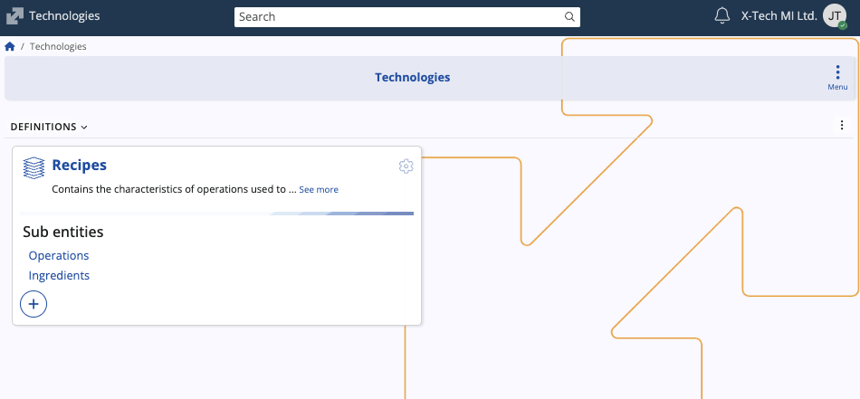
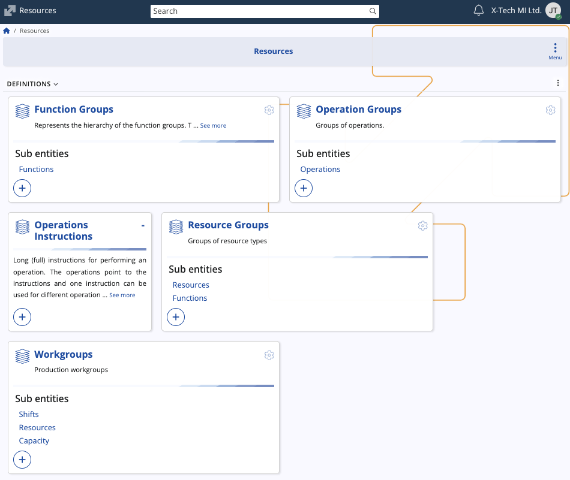
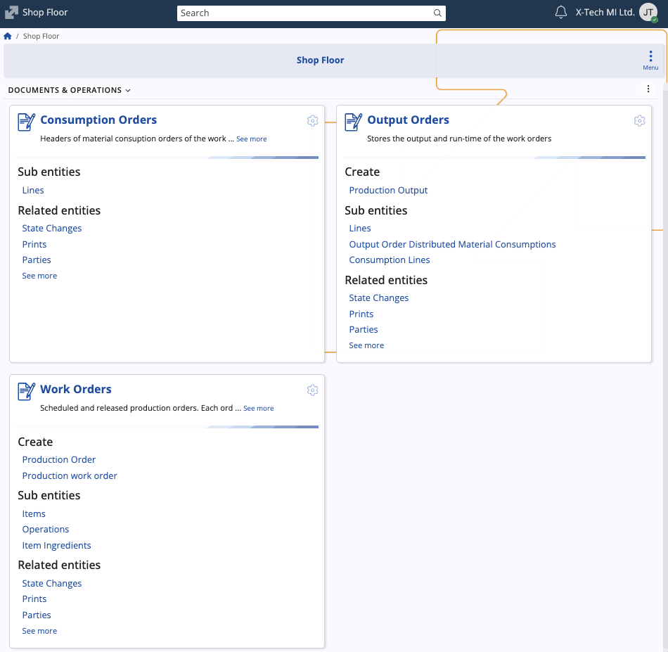

Production
The Production module is designed to manage, control, and optimize the entire manufacturing process. Its primary function is to define the product structure (recipes, operations, ingredients), model the available production capacity (resources), and manage the execution and recording of work on the shop floor (work orders, consumption/output orders).
Structure
The Production module consists of several submodules, each managing a distinct area of the production process.
Technologies
This submodule defines what is produced and how it is produced in the making of a product.

| Entity | Description |
|---|---|
| Recipes | The central definition that contains the characteristics of operations and/or ingredients used to create products. It links ingredients with a sequence of operations to define the product structure. |
| Operations | Sub entities determining the routing (operation list) of a recipe (e.g., aging, mashing). They can be grouped into operation groups and carry technical parameters like resource usage and time standards. |
| Ingredients | Sub entities determining the materials or components of a specific recipe, defining the material inputs needed for production. |
Resources
This submodule structures and defines the physical and labor assets available for manufacturing, providing essential data for production scheduling and execution.

| Entity | Description |
|---|---|
| Function Groups & Functions | Represents the resource's specific technical skills or capabilities. Each function is defined with a primary unit, allowing the system to quantify and match an operation's required capability to a resource's competence. |
| Operation Groups & Operations | Defines the types of work that can be performed. Each operation can specify a workgroup resource, the quantity of the resource to be used, and time standards for execution. |
| Resource Groups | Aggregates individual resources into logical pools (e.g., Assembly department). Resource groups define available functions and set costing parameters for the resources contained within them. |
| Workgroups | Production workgroups that define capacity at a granular level, including associated shifts and resources. |
| Operations - Instructions | Detailed instructions for performing an operation. One instruction can be used for different kinds of operations. |
Shop Floor
This submodule manages the execution cycle, providing the transactional documents necessary to schedule work, record material movements, and track production output on the factory floor.

| Entity | Description |
|---|---|
| Work orders | The core document for production execution. It is a scheduled and released production order, specifying the product, quantity, and linking to the recipe. It contains items to produce and detailed item ingredients. |
| Consumption orders | Documents material consumption against a specific work order. It records the inventory transaction of issuing materials from storage to the production floor. |
| Output orders | Documents the production output (finished goods) and run-time of the work orders. This records the inventory transaction of receiving finished goods into stock and tracks the actual time spent on production. |
Note
The screenshots taken for this article are from v.26 of the platform.